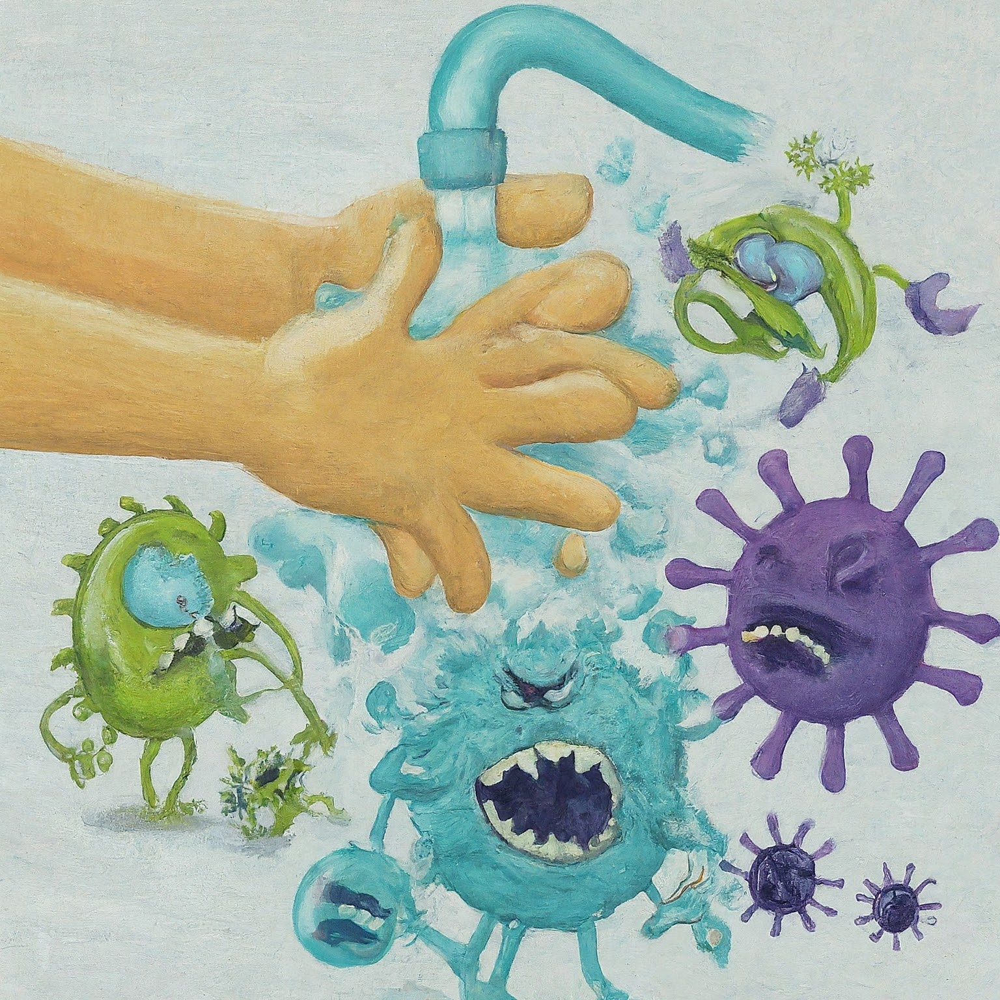

Treating COVID-19
There are many ways your actions can help protect you, your
household, and your community from severe illness from COVID-19.
CDC's COVID-19 hospital admission levels provide information about
the amount of severe illness in the community where you are located
to help you decide when to take action to protect yourself and
others.
COVID-19 vaccines help your body develop protection from the virus
that causes COVID-19. Although vaccinated people sometimes get
infected with the virus that causes COVID-19, staying up to date on
COVID-19 vaccines significantly lowers the risk of getting very
sick, being hospitalized, or dying from COVID-19. CDC recommends
that everyone stay up to date on their COVID-19 vaccines, especially
people with weakened immune systems.
Actions that can improve ventilation and filtration include:
-
Bringing in as much outdoor air as possible—for example, opening
windows.
-
Increasing air filtration in your heating, ventilation, and air
conditioning (HVAC) system, such as by changing filters
frequently and using filters that are properly fitted and
provide higher filtration.
-
Using portable high-efficiency particulate air (HEPA) cleaners.

Preventive Measures
-
Vaccination: Receiving a COVID-19 vaccine is the most
effective way to prevent the disease and reduce the severity of
symptoms if you do get sick.
-
Mask Wearing: In crowded or indoor settings, especially in
areas with high transmission rates, wearing masks can help reduce
the spread of the virus.
-
Hand Hygiene: Regularly washing your hands with soap and
water for at least 20 seconds or using hand sanitizer with at
least 60% alcohol can kill the virus.
-
Physical Distancing: Keeping a distance of at least 6 feet
from others can reduce the risk of transmission.